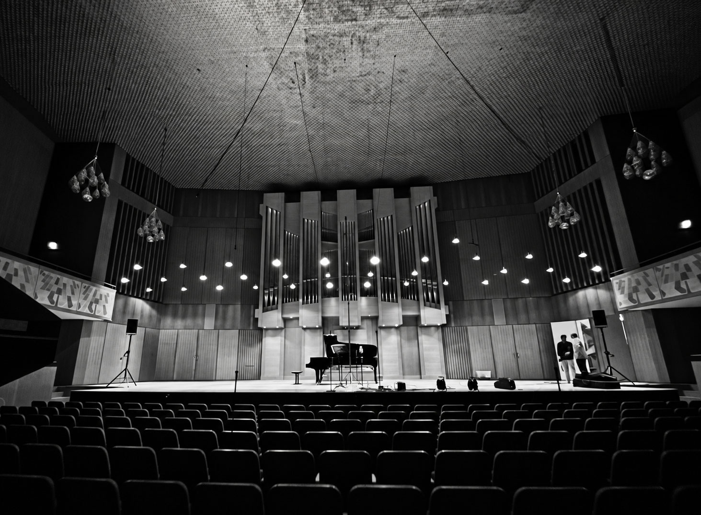
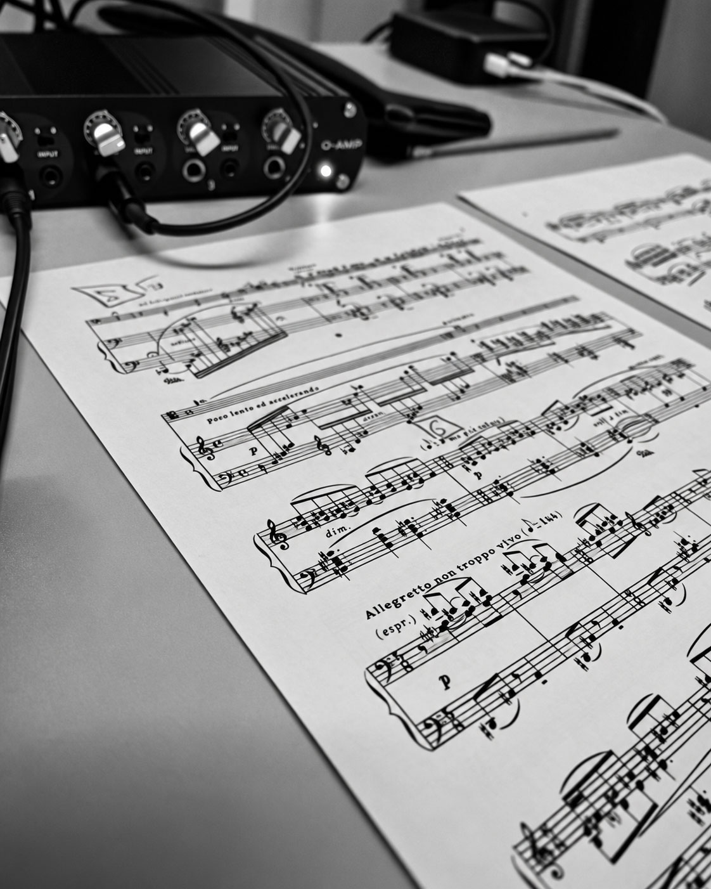
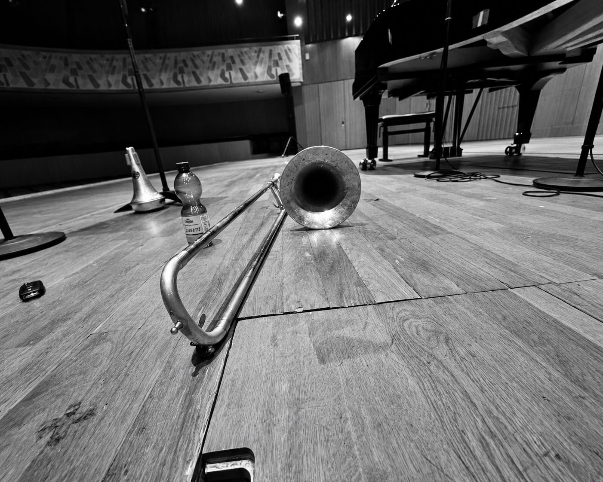

„Wenn ich spiele, interessiert mich in erster Linie der Klang. Bei der Posaune ist er ein Schmelztiegel: die Rhetorik der Renaissance, das Runde, Dunkle der Romantik — und das Ergebnis lebt im Hier und Jetzt."Jakob Grimm
Mit LAMENTO legt Jakob Grimm sein Debütalbum vor — ein Programm, das seinen Titel wie eine Frage trägt, nicht wie eine Antwort. Denn die Posaune kennt die Klage seit Jahrhunderten: Sie hat Tote begleitet, Apokalypsen angekündigt, in den Gassen von New Orleans geschrien und der Kirchenmusik der Renaissance mit einem Klang versehen, den man nur als den Atem der Vergänglichkeit beschreiben kann. Man weiß, wie das klingt. Was aus diesem Erbe werden kann, wenn man es ernst nimmt, ohne es zu wiederholen, wird auf diesem Album befragt.
LAMENTO entstand in enger Zusammenarbeit zwischen Manuel Zwerger und Jakob Grimm. Die Musiker erkundeten gemeinsam die Klangmöglichkeiten der Posaune, horchten in ihre Physik hinein, probierten aus. Zwerger setzt dabei das Glissando — die vertrauteste Geste der Posaune — im Titelstück als klingende Täuschung ein. Was dabei entstand, klingt wie ein elektronischer Effekt — glitchend, phasenverschoben, surreal — und bleibt doch rein akustisch: Zug und Lippe arbeiten gegeneinander, die Posaune klettert entlang der Naturtonreihe, jener uralten akustischen Leiter, die in jedem Blechton schlummert. Ein Lamento, das nicht klagt wie erwartet — sondern wie jemand, der die Sprache der Klage neu buchstabiert.
Plain-Chant et Allegretto — schon der Titel verrät eine Spannung. Alfred Désenclos nannte seine Musik selbst „romantisch" — und doch klingt das Stück nach jener schwebenden Modalität, die dem Gregorianischen Choral entstammt und französische Musik seit Jahrhunderten durchzieht. Nur dass er hier auf einem Instrument landet, das keine Worte kennt. Als würde man eine Melodie summen, deren Worte man vergessen hat. Am Klavier ist Irén Seleljo zu hören, mit der Grimm seit Jahren eine enge musikalische Partnerschaft verbindet.
Sechs Stücke (Hat darab harsonára és zongorára), die allesamt auch in György Kurtágs Klavierzyklus Játékok existieren — jenem persönlichen Kosmos aus Miniaturen und Widmungen, den Kurtág seit 1973 wie ein Tagebuch weitergeschrieben hat. Die Übertragung auf die Posaune legt etwas frei, was bislang im Klaviersatz schlummerte: Die Fanfaren, die im Original den Zyklus einrahmen, sind eine ureigene Geste des Blechbläsers — auf der Posaune bekommen sie nun eine Selbstverständlichkeit, die überrascht. Dazwischen: Klage, Gewalt, Klage. Und dann, als unerwarteter Nachsatz, die Hommage à Paganini — ein rätselhaft freudiger Überschlag ins Virtuose, der wie ein böses Lächeln anmutet.
Der Mühlstein des Amlòði mahlte einst Frieden und Überfluss, dann Salz, dann Felsen und Sand — und erzeugt so den Maelstrom, den Strudel zur Unterwelt. Dieses Bild aus Il Mulino di Amleto stellt Biagio Putignano seinem Hamlet's Mill als Motto voran. Putignano schrieb das Stück für Jakob Grimm und entschied, die Posaune ohne Stimmzug spielen zu lassen. Eine kleine, folgenreiche Entscheidung: Der Ton wird kompakter, rauer — archaischer. Als hätte das Instrument sich an etwas Älteres, Roheres erinnert. Dass ausgerechnet dieser Klang den Maelstrom in Bewegung setzt, ist keine zufällige Besetzungsentscheidung.
[...] Amlòði si distingueva per il possesso di un mulino favoloso dalla cui macina ai suoi tempi uscivano pace e abbondanza. Più tardi, in tempi di decadenza, il mulino macinò sale; ora, infine, essendo caduto in fondo al mare, macina le rocce e la sabbia creando un vasto gorgo, il Maelstrom («la corrente che macina», dal verbo mala «macinare»), ritenuto una delle vie che conducono alla terra dei morti. [...]
[...] Amlòði zeichnete sich durch den Besitz einer sagenhaften Mühle aus, aus deren Mahlwerk zu seiner Zeit Frieden und Überfluss hervorgingen. Später, in Zeiten des Niedergangs, mahlte die Mühle nur noch Salz; jetzt schließlich, auf den Grund des Meeres gesunken, mahlt sie Felsen und Sand und erzeugt so einen gewaltigen Strudel, den Maelstrom («der mahlende Strom», vom Verb mala, «mahlen»), der als einer der Wege gilt, die ins Land der Toten führen. [...]
Den Abschluss bilden René Leibowitz' Quatre Bagatelles op. 61 — Miniaturen eines Komponisten, der seine Musik so schrieb, wie er sein Leben lebte: im Geist des permanenten Widerspruchs. Schüler Ravels, Apostel Schönbergs, Lehrer Boulez' — und von seinen Zeitgenossen nie recht verstanden, weil er sich nicht einordnen ließ. Lamentation gegen Ostinato, Marche Funèbre gegen Chants sans Paroles — Gegensätze, die einander nicht aufheben, sondern befragen. Und unter ihrer strengen Oberfläche: ein Klang, der wärmer und sinnlicher ist, als man erwartet.
LAMENTO ist kein Manifest und kein Lehrgang. Es ist der Versuch, die Posaune als das zu hören, was sie im besten Fall ist: Ein Instrument, das sprechen kann, ohne erklären zu müssen.
Posaune
Jakob Grimm versteht notierte und improvisierte Musik als zwei Wege zu einem Klang, der unmittelbar spricht. Seine Bassposaune ist ein Instrument der Tiefe, selten im Rampenlicht und genau deshalb voller unentdeckter Möglichkeiten. In enger Zusammenarbeit mit Komponisten wie Manuel Zwerger, Biagio Putignano und Mike Svoboda entstehen neue Werke für sein Instrument; Konzerte führen ihn unter anderem in die Wigmore Hall London, die Philharmonie Berlin und nach Grafenegg. Mit dem Quartett Tetra Brass verfolgt er eine eigene Klangsprache zwischen wiederentdeckter Literatur und eigens für das Ensemble geschriebener Musik; im Musiktheater führen ihn Produktionen an die Bayerische Staatsoper und zur Münchener Biennale. Er studierte in München, Wien, Amsterdam und Basel und unterrichtet Posaune und Kammermusik an der Berufsfachschule für Musik in Dinkelsbühl.
Klavier
Irén Seleljo studierte an der Franz-Liszt-Musikakademie Budapest sowie an der Konservatorium Wien Privatuniversität. Ein Stipendium führte sie ans Bard College in die USA, wo sie bei Jeremy Denk studierte. Ihr künstlerischer Schwerpunkt liegt in der Kammermusik, mit besonderem Interesse an der Musik der Gegenwart. Sie konzertierte u. a. in Österreich, Ungarn, Frankreich, Rumänien, Spanien, Italien und Chile. Sie unterrichtet als Universitätsprofessorin an der Musik und Kunst Privatuniversität der Stadt Wien und an der Kunstuniversität Graz.


